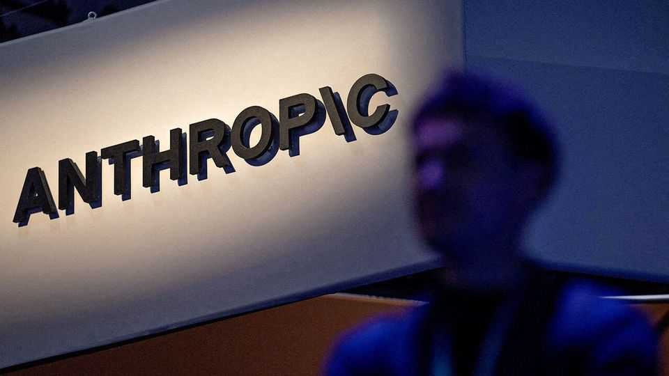
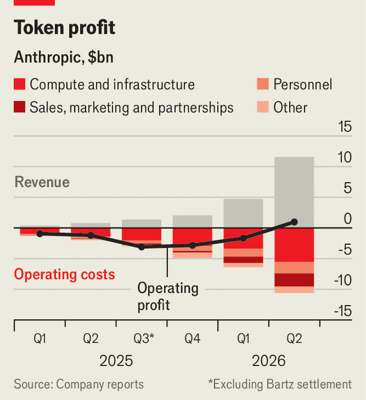

Don’t expect supersize profits from Anthropic soon
Lurking in its IPO prospectus are warnings of challenges ahead

Oct 29th 2026
Breakneck growth is commonplace in Silicon Valley. The rise of Anthropic is something else. In the first quarter of last year—when Claude Code, its hit programming tool, was first released—the artificial-intelligence lab pulled in $376m of revenue. By the second quarter of this year that figure had risen 30-fold, to $11.6bn, surpassing corporate mainstays such as McDonald’s or 3M.
In a few weeks this darling of the AI revolution will undergo an initial public offering (IPO) that will be, if not the largest of all time, then certainly close to it. On October 26th it publicly filed supporting paperwork that gave the outside world a closer look at its finances.
Anthropic’s rapid growth is all the more remarkable because, unlike many zippy startups, it has already reached profitability. In the second quarter it eked out an operating profit of just under $1bn, at an 8% margin, having lost $1.7bn in the preceding three months (see chart).

The company is particularly eager to draw attention to its spending on computing power, which fell from 251% of sales in the first quarter of 2025 to just 48% in the second quarter of 2026. Anthropic claims that improvements in its AI models have made it faster and more efficient to develop and serve its technology, allowing the company to make the most of its limited resources. Its personnel costs also fell from 58% of revenue to 16% over the same period as it saw the benefits of scale.
But can Anthropic’s stunning performance continue? A closer look suggests caution is warranted: growth is slowing, the company is paying higher prices to access scarce computing power and a resulting shift towards directly purchasing AI chips will guzzle up much of the cashflow Anthropic would otherwise be on course to generate. Earlier investors who had hoped for a public valuation as high as $2trn may thus be disappointed.
Anthropic’s scorching revenue growth has put a target on its back. Claude Code made it an early leader in the race to automate programming. Silicon Valley colossi such as Meta and Microsoft became huge customers, spending billions of dollars on the lab’s technology. More recently those customers have been pushing staff to use internally developed alternatives. At the same time, OpenAI, Anthropic’s arch-rival, has been gaining ground with its own offering, Codex, the daily use of which has risen tenfold since early August. And after the short-lived craze for “tokenmaxxing” earlier this year, companies of all stripes have been more closely monitoring their spending on AI and imposing limits on their engineers.
This month Anthropic told shareholders during a private gathering that revenue in the third quarter was up by about 45% from the preceding three months, a third of the growth rate it achieved in the second quarter. In its IPO prospectus the company warns that, as the market matures, growth could slow “more rapidly than we anticipate”. Moreover, it is increasingly reliant on the tech giants to push its products. Almost half of Anthropic’s revenue now comes from sales made through the cloud businesses of Alphabet, Amazon and Microsoft. The company has also upped its investment in advertising to help build demand for its products. Its spending on sales, marketing and distribution partnerships (including with the big cloud providers) absorbed 18% of revenue in the second quarter of 2026, up from 6% in the first three months of 2025.
Another problem Anthropic faces is that, like other AI developers, it is struggling to secure the computing power it needs to serve customers. Its prospectus warns investors that use of “short-term compute” could go up in the near term, weighing on its margins. For example, Anthropic has agreed to pay SpaceX about $3.1bn per month to use its Nvidia chips into 2029. (Anthropic is able to back out from early next year with 90 days’ notice.)
That explains why the lab is starting to develop more of its own computing infrastructure, rather than relying solely on cloud providers. This strategy should help keep operating costs under control, but also provides forewarning that the business will become a more capital-intensive enterprise in the long run. The initiative, called Anthropic Direct, involves procuring chips from providers such as Broadcom, which develops custom silicon, and installing them in rented data centres. That could make it harder to start throwing off the kind of free cashflow investors might hope for, and require the business to raise more money.
In Anthropic’s prospectus, its founders argue that its spending plans “may seem irresponsibly large at first glance”, but are justified by the exponential trajectory that AI is on. “We will aim to be bold but sane,” they write. With a technology so mind-bending, striking that balance may prove surprisingly difficult. ■